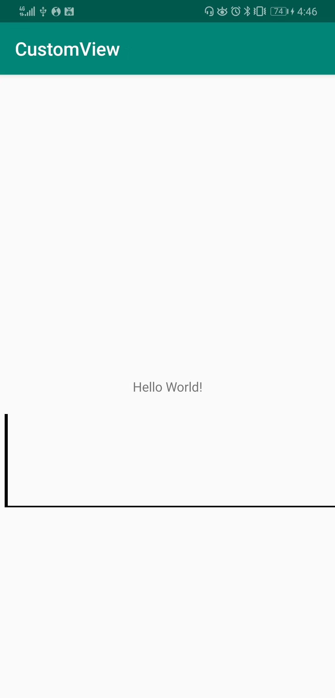
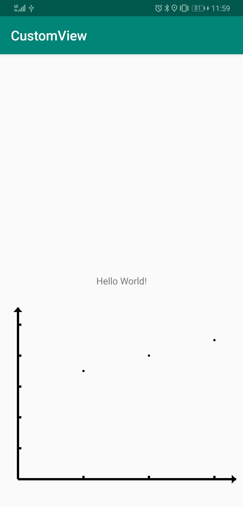
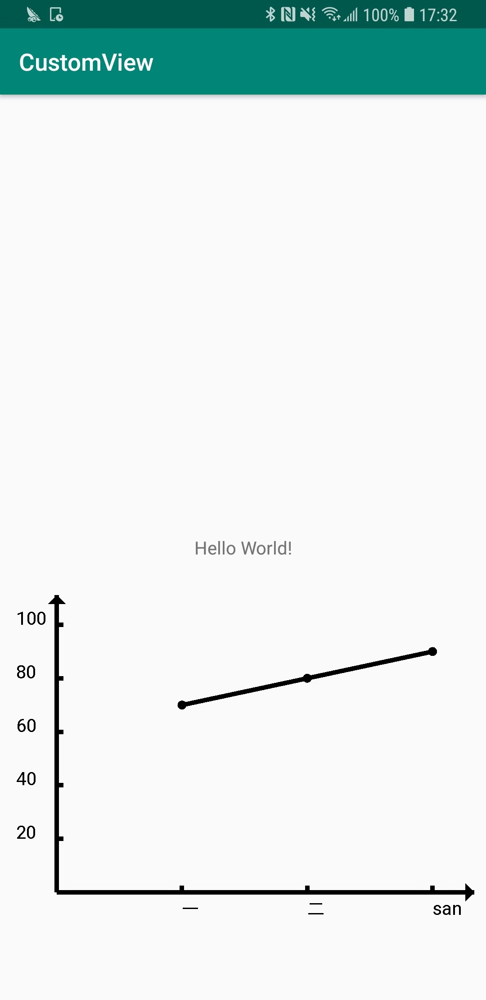

android 自定义View 继承View
上篇关于自定义View的介绍
接下来将会针对自定义View三种情况一一实现。
继承View
创建一个class MyView 继承View
目标是写一个折线图
现在res/values下面新建一个attrs.xml文件，来申明我们需要的属性。
1 |
|
先新建一个clas 继承View， 并初始化几个构造函数
1 |
|
在onMeasure函数中对尺寸做约束
1 |
|
先绘制两个轴线
注意canvas.draw..()方法，中的位置参数都是相对定位尺寸，都是相对于该视图左上角的坐标定位，而onLayout中的四个位置参数都是相对于屏幕左上角。
这两个里的坐标不要弄混。
1 | /** 绘制两条轴线 */ |
在MainActivity中配置该视图1
2
3
4
5
6
7
8
9<com.justin.customview.MyView
android:layout_width="match_parent"
android:layout_height="100dp"
app:layout_constraintTop_toBottomOf="@+id/text_hello"
android:layout_marginTop="20dp"
android:padding="10dp"
app:axieColor="@color/black"
android:id="@+id/myView"
/>
我们直接运行,效果如下：

x,y轴就画好了。但很明显我们设置的padding没起作用，因为padding是需要我们自己处理的。
新增一个方法初始化这些尺寸数据
1 | /** |
这样我们就对padding做了处理，接下来接着绘制我们需要的图形。
我们之前绘制了两个轴，xy，但我们平常绘制的轴都会有箭头，我们再在x轴右侧、y轴上侧绘制两个箭头
1 |
|
这里主要用到了drawPath函数。其实canvas对象还有很多其他的绘制图形的方法。
设置数据并绘制点
我们已经完成了绘制两条轴线，现在要开始绘制数据了。
首先我们要确认标准线，x轴的标准线肯定就是xValue的值，
但y轴的标准线是不定的，我们要先找出最大值，确定几条标准线，确定每条标准线的值。
我们先假设我们的值在0-100以内，取5条标准线，每条间距20.
先设置两个数据1
2
3
4
5
6
7
8
9
10
11
12
13
14
15
16
17// 数据
private float[] yValue;
private String[] xValue;
private int lineNum = 5;
/** 设置数据并刷新 */
public void setData(float[]yValue, String[]xValue) {
this.yValue = yValue;
this.xValue = xValue;
postInvalidate();
}
/** 设置标准线数目 */
public void setData(int lineNum) {
this.lineNum = lineNum;
postInvalidate();
}
然后我们开始绘制标准线、各个点1
2
3
4
5
6
7
8
9
10
11
12
13
14
15
16
17
18
19
20
21/** 绘制各个点 */
private void drawPoint(Canvas canvas) {
if(xValue == null || yValue == null) return;
// 先绘制5条y轴标准线位置 取高度的90%作为图线的最高。
float maxHeight = (float)((bottom - top) * 0.9);
float itemHeight = maxHeight / 5;
for(int i = 1; i <=5; i ++) {
canvas.drawLine(left, bottom - itemHeight * i, left + 15, bottom - itemHeight * i, paint);
}
// 再绘制x轴的数据， x轴线的标准值就是x轴的值，数目也是xValue的值
float maxWidth = (float)((right - left) * 0.9);
float itemWidth = ((float) (maxWidth * 1.0)) / xValue.length;
for (int i = 1; i <= xValue.length; i ++) {
float x = left + itemWidth * i;
// 绘制轴线
canvas.drawLine(x, bottom, x, bottom - 15, paint);
// 绘制点
float y = bottom - maxHeight * yValue[i-1] / yMax;
canvas.drawCircle(x, y, 5, paint);
}
}
而在MainActivity.kt中，我们可以这样使用
1 | // kotlin语法 |
此时的实现效果：

现在我们完成了图形的大致绘制，但在x、y轴却没有一些文字说明，接下来我们就要加上这些
绘制x、y轴标准线值，将各个点连接起来。
1 | /** 绘制各个点 */ |
最后实现效果如下图：
